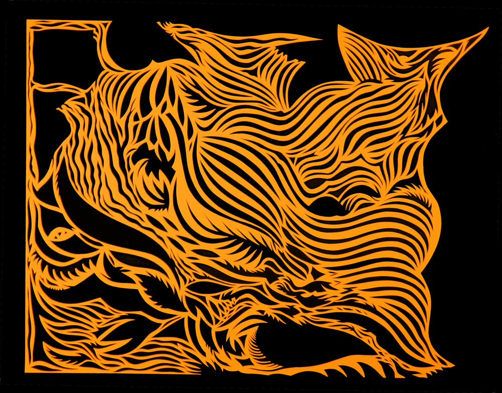
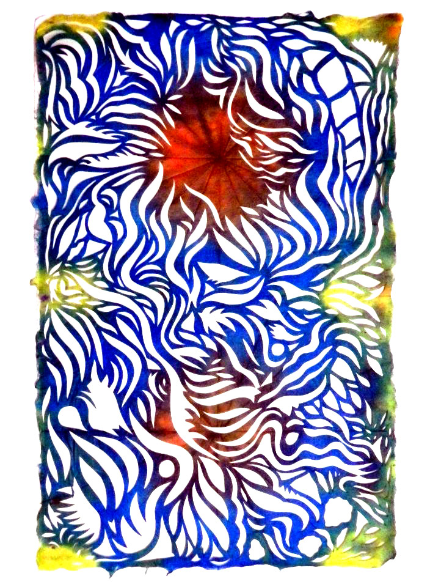

Ànjà (Notànjà) Sieger
Anja Sieger, a natural born storyteller, is a multidisciplinary artist with an alter ego. Having received her BFA in printmaking and creative writing in Kansas City, Missouri, Sieger returned home to Milwaukee and has been able to marry her love for words, prints, and character by illustrating her thoughts. Known most for her whimsical paper cut outs and tapping away at her typewriter writing prose, fiction, letters, and poetry for strangers, she brings a sense of personality and precision to her pieces.
Sieger describes her dragon cutting process as a form of meditation and intuition. The cutout designs and abstract shapes formed resemble shadow pieces, clouds or ink blots in the sense that what the viewer sees is really in the eye of the beholder. It’s almost as though you could see the movement in each piece. To cut or not to cut is literally her only question when she is working with the paper in front of her, scissors in hand. Sieger identifies herself as Anja “Notanja” because although Anja is the artist, Notanja represents the driving force behind the artist, or the “spirit that makes the art,” as Anja describes.
amfm: What were you like as a kid, and did art and creativity come naturally to you?
anja: I was stubborn and liked to embody myself as different characters. In early childhood, I refused to let anyone call me “Anja.” I thought that was such an ugly name. I wanted to be a cat, and so I insisted on everyone calling me “Garfield.” Whenever somebody called me Anja I would get mad and yell, “I’m not Anja, I’m Garfield!” Then I’d get called Notanja, which got made me even madder. Around age five, I felt sorry for Anja and accepted her as my name, but continued to go through different phases. During my preteen years, I spoke predominantly in what I thought was a British accent. At 16, I invented my own country, Rhatasia. I told new acquaintances that I was from there and they believed me. I came up with a whole history for Rhatasia, which got me into college for a discounted price. Pretentions are good to nurture sometimes.amfm: How did you get into making art, and how has the process and type of work evolved for you?
anja: I was always encouraged. My parents have footage of some performance art I did as a toddler. I would sing improvised stories at my keyboard, and play disturbing dissonant notes to go along with what I was feeling. The consistent elements in my work at any age are storytelling, character exploration, intricate detail and improvisation. My current papercut series is the least narrative series of work that I have ever produced, only the titles hint at a story. The paper itself becomes the character, absolving me from my usual role of actress. I think having developed a mostly separate practice as a performance writer has freed me from always feeling a need to start my visual art from a story. Now, I just I start from an instinct to cut something up. A curiosity to see what happens when I don’t think. I let Notanja do the thinking.amfm: Where does Anja start and Notanja end?
anja & notanja: Anja stops about three feet from my body in any direction. Notanja is the rest of existence and non-existence. Notanja is woo-woo, solid, gaseous, underwater, unrestrained, sprinkly, very outer space, all-knowing, harmonious and even you. Notanja is wise, much wiser than me, so I’m going to ask Notanja the remainder of these interview questions...if you’re cool with that?
amfm: Sure.
anja: What are you made out of, Notanja?
notanja: Raspberry thorns, fish blood, wishes, the shared glance of soul mates, gleeful snorts.
anja: In 2010 you stopped letting me draw with enjoyment. Instead, you urged me to cut shapes out of paper. Why?
notanja: You know how to draw. I wanted you to learn how to cut. How to be basic: yes or no, stay or go. Younger adults need to acquire the wisdom of older adults. The world will seem unbearably complicated and intimidating to the young. Cutting only offers two options. A relief, eh?
anja: Yes. And what was it that I needed to know before you got me into making abstract art? It seems like before this series we always used be so figurative, narrative, obvious and recognizable!
notanja: Trouble. You needed to know the trouble of graduating into the great recession without a plan, a flea infestation, that horrible job at the puppet theater, chronic illness, long-term unemployment and confusion. Then, in order for us to work in harmony again you needed to know safety and retreat: nightly television watching, free room and board, raccoons and woodchucks out the window. You needed time to untangle into the new era; and like any new era we needed a completely new form. What is recognizable in this work is the era that it was made in, the stories that make that era.
anja: Even if sometimes its only me and you that recognize those stories from our own shapes and symbols. We always do come back to the same symbols. Why dragons? Why demons? Why clouds? Why compost? Why maidens? Why cats? Why outer space?
notanja: Dragons teach the same lesson as paper cutting, yes/no stay/go polarities with the fire to act in a fantasy world. Demons are your curses personified; if you befriend them you can convince them to help you out for as long as they stay with you. Clouds are wisps of anything you want. They serve the same purpose as a dollop of ice cream. Compost is a celebration of the inherent beauty in death, and a memento mori. Every time you draw a person, maiden or other, you are drawing a variant of yourself. You have drawn zillions of selves over the years because you will never know your full content. Cats are your animal self, Garfield. Outer space has no Earthly limits, it just expands further and further. I come from outer space. And as Sun Ra said, “Space is the place!”
anja: You never talk about fear. What do you think of instead of fear?
notanja: I am what comes down when fear is set aside for the pursuit of curiosity. I am curiosity, fierce, but gentle, like a dog’s tongue to a spout of maple syrup.
anja: Who are we on other planets?
notanja: Just ourselves in a different shape and multiplied by a frillion.
|  |  |
For more from Ànjà Notànjà Steiger:
photo credits: anjà notànjà steiger